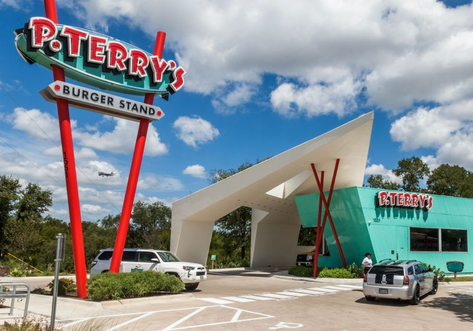
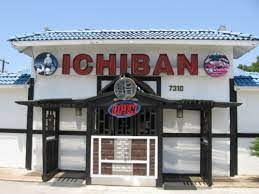
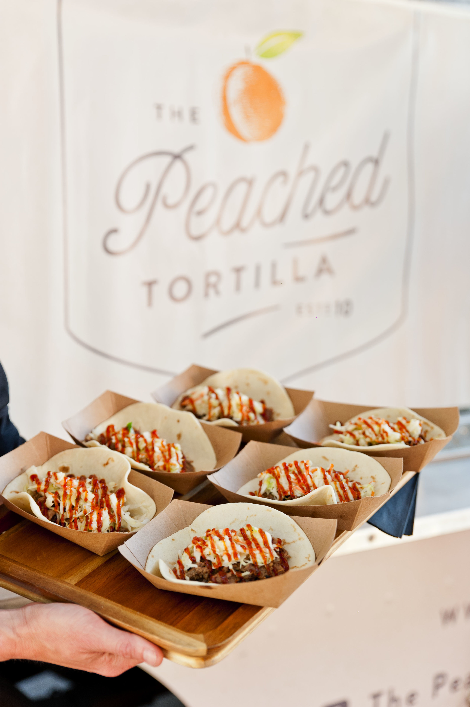
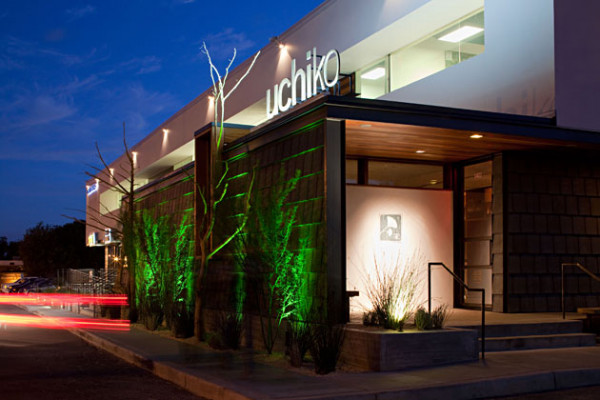
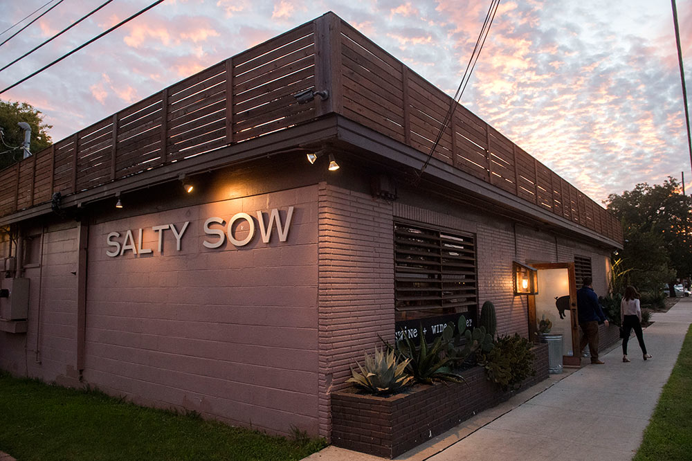

Austin, TX, has many delicious and incredible restuarants to offer its
hungry guests.
From pizza, to sushi, to BBQ that made restuarants famous, Austin has a
myraid of choices for every appetite.
Below are a list of
Anthony's Top Five Favorite Restuarants in Austin, TX.
Great spot for a quick, affordable burger. There's lots of burger joints
in Austin, but P. Terry's takes the cake for delicious and satisfying.
Stop by their location on Barton Springs and Lamar.

Are you a fan of sushi? Try out this delicious and affordable Japanese
and Korean kitchen. Their specialty rolls are different from what you
typically see and are very tasty.
Stop by their location on Burnet and Greenlawn.

This once-a-food-truck restaurant now has a brick and mortar location
showcasing a collection of Asian fusion dishes. In addition to the great
food, try out one of their amazing cocktails.
Stop by their location on Burnet and Shoalmont.

Time to step up your dining experience (and give your wallet a workout)
with this sushi lover's paradise. Uchiko creates dishes that truly make
you reconsider what life means.
Stop by their location on Lamar and 43rd.

If you're hunting for delicious, indulgent food coupled with a relaxed
homey atmosphere, look no further. Salty Sow takes comfort food and
cocktails to a whole new level.
Stop by their location on Manor and Poquito.
